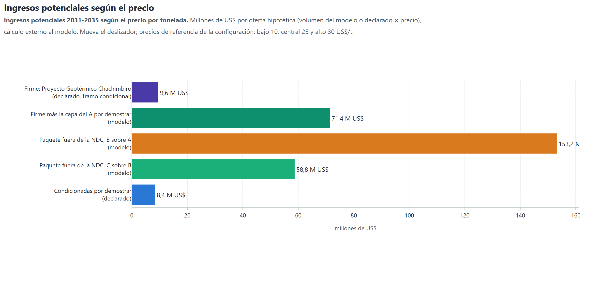

5.1.3. Ingresos potenciales
Los ingresos son volumen × precio y se calculan fuera del modelo, con los precios de referencia de la
hoja Art6_Precios. Las líneas con potencial declarado usan ese valor como volumen. Las capas de la
escalera usan la reducción que calcula el modelo.


Figura 5.10 Ingresos potenciales según el precio
Ingresos potenciales 2031-2035 según el precio por tonelada. Millones de US$ por oferta hipotética (volumen del modelo o declarado × precio), cálculo externo al modelo. Mueva el deslizador; precios de referencia de la configuración: bajo 10, central 25 y alto 30 US$/t.
Qué muestra
Ingresos potenciales 2031-2035 (millones de US$) de cada oferta hipotética: volumen × precio. Es un cálculo externo al modelo sobre sus volúmenes; las líneas con potencial declarado usan ese valor.
Cómo leerla
Cada barra es una oferta; el deslizador cambia el precio por tonelada. Los precios de referencia vienen de la hoja Art6_Precios: bajo 10, central 25 y alto 30 US$/t.
Qué dice el modelo
A 25 US$/t, la oferta firme rinde 9,6 millones de US$ y la capa del C, 58,8 millones.
Para la decisión
La oferta mayor es «Paquete fuera de la NDC, B sobre A (modelo)», con 6 129 kt; la firme, «Firme: Proyecto Geotérmico Chachimbiro (declarado, tramo condicional)», suma 385 kt y es el ingreso que hoy sostendría una negociación. Referencia del precio alto (30 US$/t): primera transferencia de ITMO bajo el Artículo 6.2 (Tailandia a Suiza, 15-12-2023), unos 30 USD por tonelada. Los precios de mercado cambian rápido y deben actualizarse antes de cualquier decisión (fecha del dato en la configuración: 2023).
clave |
oferta |
kt_2031_2035 |
nota |
MUSD_Bajo |
MUSD_Central |
MUSD_Alto |
|---|---|---|---|---|---|---|
firme |
Firme: Proyecto Geotérmico Chachimbiro (declarado, tramo condicional) |
384.8 |
única línea con adicionalidad firme; vende tramo condicional |
3.8 |
9.6 |
11.5 |
firme_capa |
Firme más la capa del A por demostrar (modelo) |
2857.9 |
agrega la reducción que el modelo atribuye a las palancas del A |
28.6 |
71.4 |
85.7 |
capa:B |
Paquete fuera de la NDC, B sobre A (modelo) |
6129.0 |
no consume ninguna meta; adicionalidad por demostrar |
61.3 |
153.2 |
183.9 |
capa:C |
Paquete fuera de la NDC, C sobre B (modelo) |
2350.3 |
no consume ninguna meta; adicionalidad por demostrar |
23.5 |
58.8 |
70.5 |
declarado |
Condicionadas por demostrar (declarado) |
337.2 |
potencial declarado en el Plan de Implementación de la Segunda NDC; sin EN32, en reserva |
3.4 |
8.4 |
10.1 |
en_reserva |
En reserva, fuera de la oferta: Renovación y Descarbonización del Transporte Público y Comercial en el Ecuador (declarado) |
925.0 |
fuera de la oferta: EN32, adicionalidad regulatoria por demostrar (decisión del 13-10-2026) |
9.2 |
23.1 |
27.8 |
maximo |
Máximo teórico con tramo condicional (A contra INCA6) |
25026.3 |
incluye Proyecto Hidroeléctrico Santiago y Proyecto hidroeléctrico Cardenillo, sin adicionalidad: no es oferta vendible |
250.3 |
625.7 |
750.8 |
Precio |
US$/t |
Referencia |
Fuente |
Fecha del dato |
Estado |
|---|---|---|---|---|---|
Bajo |
10 |
Renovables conectadas a red vendidas como ITMO, extremo bajo; techo aproximado del mercado voluntario de alta calidad |
mercado-datos (Ecosystem Marketplace 2025; síntesis de contratos 2024-2026) |
2024-2026 |
refrescar |
Central |
25 |
Punto medio del rango bilateral de ITMO de 20 a 50 US$/t; cartera KliK 2025-2030 de CHF 27/t |
KliK Foundation; síntesis de contratos KliK/JCM |
2024-2026 |
refrescar |
Alto |
30 |
Primera transferencia de ITMO bajo el Artículo 6.2 (Tailandia a Suiza, 15-12-2023), unos 30 USD por tonelada |
Primera transferencia de ITMO bajo el Artículo 6.2 entre Tailandia y Suiza (TGO y Fundación KliK), diciembre de 2023; precio de referencia público |
2023 |
refrescar |